Organization
& Visual Structure
Some more about color:
- Use
color conservatively
- Limit
the number of colors
- Colour
can speed recognition, or hinder it depending on what is
coloured and how its coloured.
- Colour
can help in grouping related items
- Keep in
mind that 5% of the population is color blind (8% of men and
1% of women)
- Be
consistent
- Think
about what certain colors commonly mean/represent
- Be
careful what colors are used together (e.g. bright red on
bright blue is really annoying)
- Use
color to indicate a change in status
There is a somewhat more rigorous one here that gives you better
feedback
http://www.xrite.com/online-color-test-challenge
Gestalt Principles - 1920s
how individual elements are grouped into gestalts (wholes) during
visual perception
- Proximity -
tend to associate elements with those nearby
compared to those further away - what do you see in fig 97a?
- Similarity -
tend to associate elements more strongly with those that share
basic visual characteristics compared to those that differ in
those characteristics - fig 97b?
- Continuity -
prefer continuous unbroken contours with the simplest physical
explanation - fig 97c (2 crossing lines, 4 segments, 2 right
angles?)
- Closure -
tend to interpret visual stimuli as complete closed figures even
when some information is absent - fig 98a
- Area -
smaller of two overlapping areas will tend to be viewed as the
figure while the larger is interpreted as ground - fig 98b is
the smaller square in front, or a hole?
- Symmetry -
tend to group based on overall form rather than constituent
parts - fig 98c
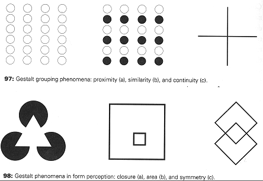
Do you have other example of Gestalt Principles?
Suggestions:
Group related
elements together establishing a hierarchy, then structure the display to reflect the relationships between the elements.
- Grouping -
words in a book grouped into sentences, paragraphs, sections,
chapters. Use groups to create manageable units. Bind functional
units tightly together and distinguish them from the surrounding
controls. (fig 103)
- Hierarchy -
hierarchy should be made obvious through the visual structures, such as using indent, size, or value
- Relationship
- position, size and value provide the most effective visual
cues to reinforce relationships (which in turn reinforces
groups).
- Balance -
equal 'weight' of design elements on either side
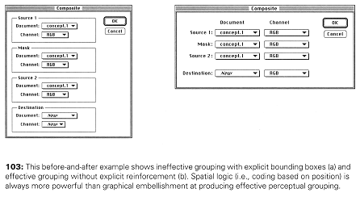
Common Errors:
Haphazard layout
- should establish spatial relationships to organize the elements
of the design.
The image on the left is very chaotic making it
hard to see the relationships.
The image on the right is much
better organized, making the relationships clear.
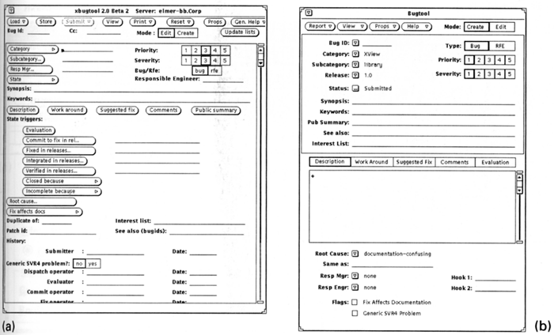
Ambiguous
Internal Relationships: consistency in the alignment of the boxes,
but not in their contents, and several things are 'almost aligned'.
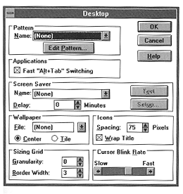
How are these
things set in a more recent version of windows?
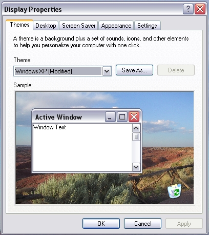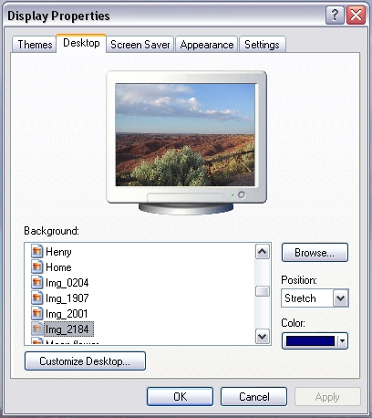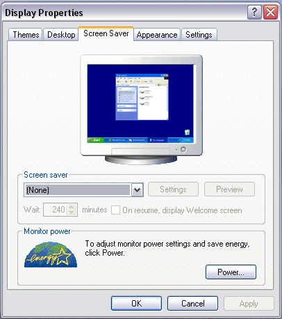 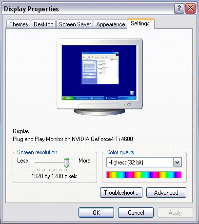
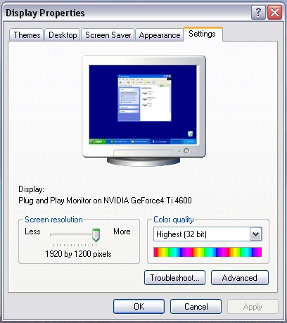
Conflicting
Symmetries:
Here, the
boundaries are symmetrical but not the contents.
Our eyes are drawn to the boundaries not the contents.
Other issues in aligning the contents of the boxes.
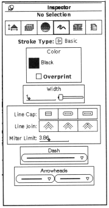
Aligning Labels
but not controls:
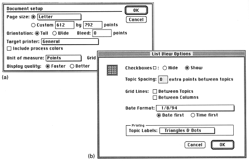
Alignment
within, but not across controls. Things start out OK at the top
and then completely self-destruct in the lower half of the
dialogue box
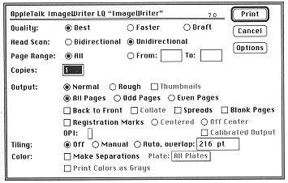
False structure: adding boxes to impose structure adds visual noise and excessive
hierarchies of 1 element?.
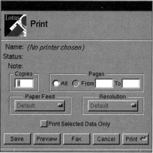
Excessive
display density: the larger was replaced by the 3 smaller more focused dialogue boxes
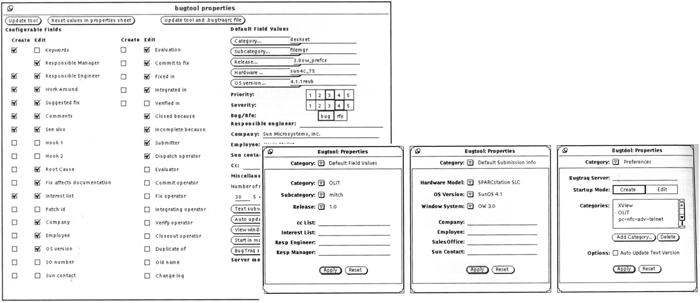
Techniques:
- Using symmetry to ensure balance
- Using alignment to establish visual relationships
- Optical adjustment for human vision
- Shaping the display with negative space
Symmetry:
- Identify the axis for symmetry: horizontal and/or vertical symmetry.
- Vertical Symmetry is more prevalent in human
perception and is generally more useful in visual displays
- Center the information on the axis of symmetry by carefully
balancing the amount of information on each side of the axis.
Alignment:
- Identify the major boundaries in the existing layout, and look
for ways to enhance them by moving additional elements into
alignment with them
- Look for elements and margins - both internal and external -
that almost, but not quite, align with one another and bring
them into alignment by altering the size or position of one or
both elements
- Look for free-standing elements and make sure they are aligned
with something else in the display - either a major margin or
some other element to which they are related
- If an element cannot be related to anything else in the
display, try to relate it to the proportions of the display
itself by positioning the element to correspond to the regular
division of the space
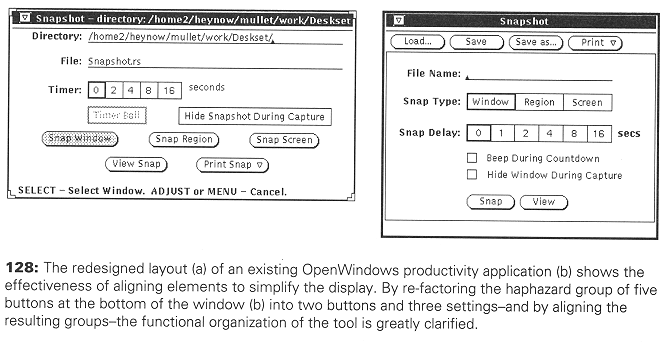
Optical
Adjustment: Extend elements beyond the margin according to the sharpness
of their adjacent angle.
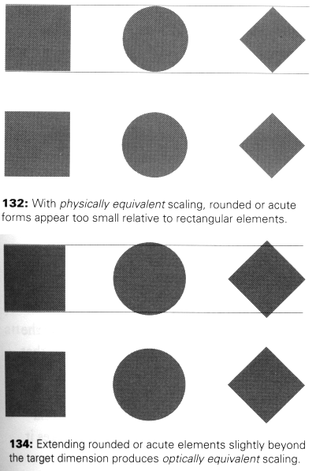
For more
information on typography you may want to check out 'helvetica' a
documentary by Gary Hustwit.
and a bit about text size and layout a bit in regards to what
happened at the Oscars
Why Typography Matters
Negative Space:
- Determine the organization of the information into a
prioritized set of chunks of manageable size.
- Ensure spatial separation of independent units of information
by adding extra white space between chunks. Extra space is
needed even if explicit boundary delimiters are used!
- Determine which elements require additional visual emphasis
- Increase the white space surrounding crucial elements
- Always remember that white space is not wasted space!
Its role is to direct the viewer's attention to adjacent regions
containing critical information.
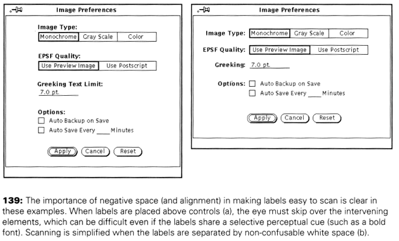
Sources:
Some images are retrieved from online resources. Other are from previous TTU HCI classes.
User Interface Design by Andrew Johnson
Designing Visual Interfaces by Mullet and Sano